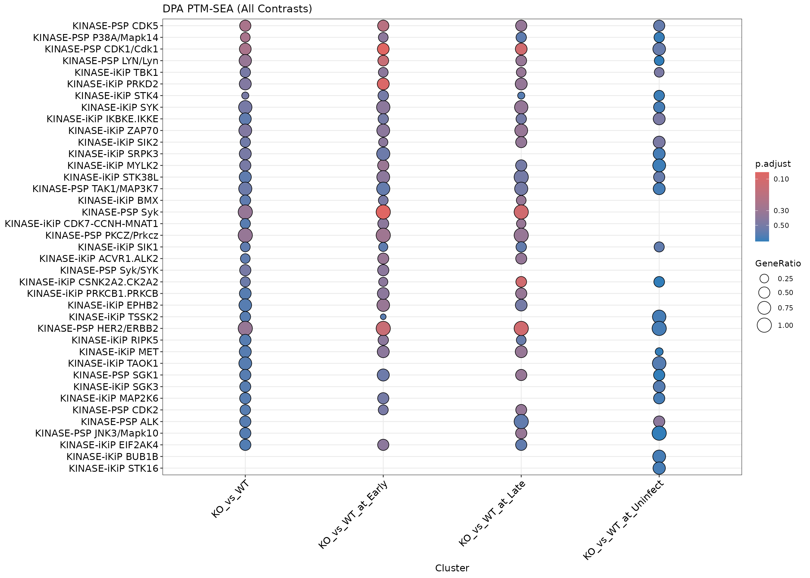
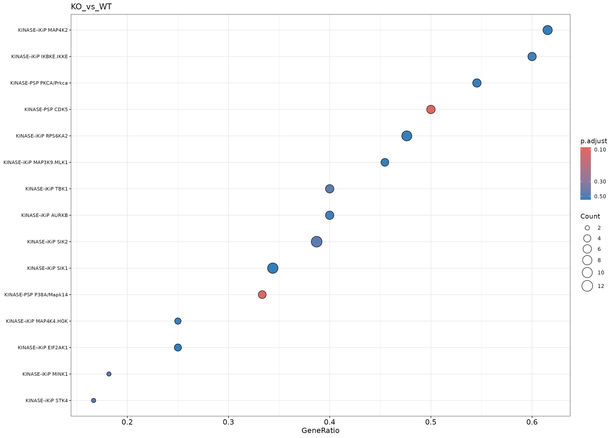
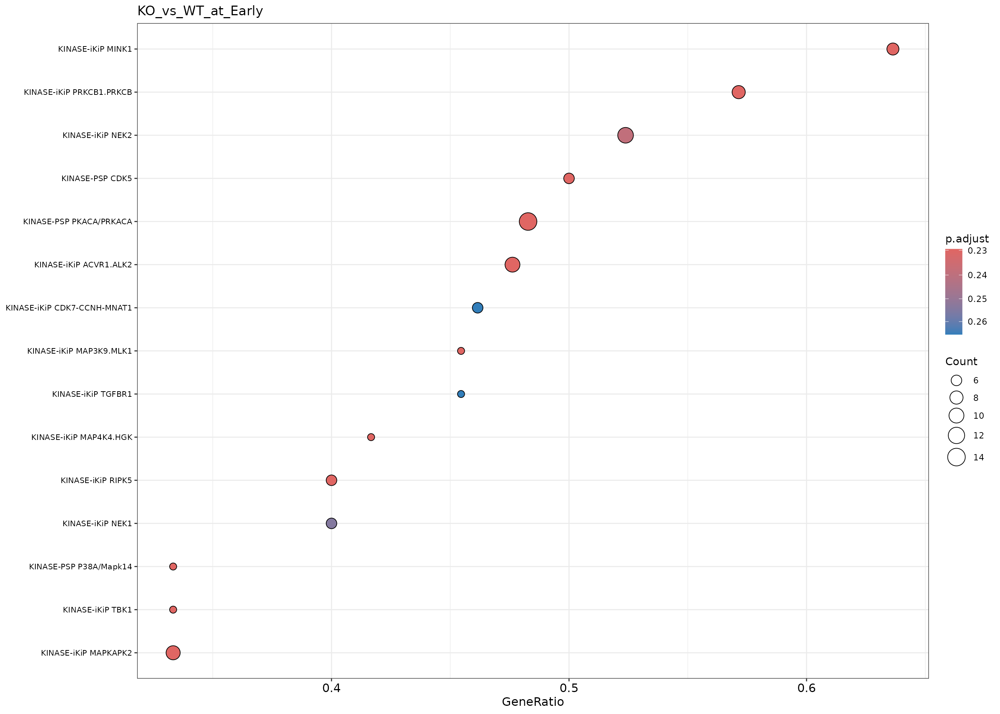
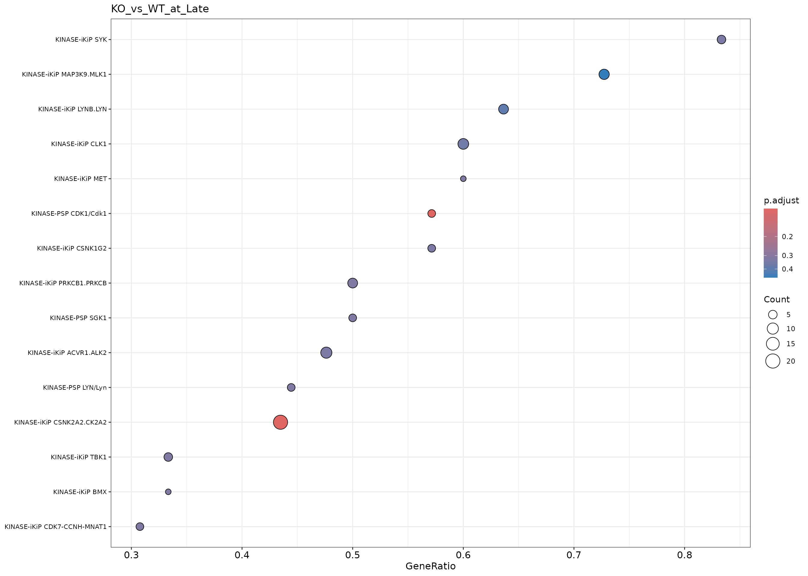
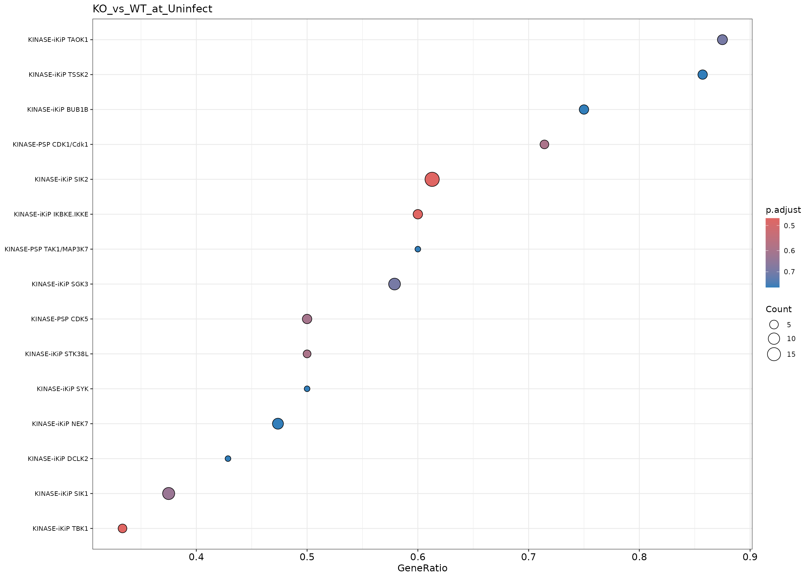

Kinase Activity (PTMsigDB + GSEA)
DPA
FGCZ
24 August, 2026
Source:vignettes/Analysis_PTMSEA.Rmd
Analysis_PTMSEA.RmdOverview
PTM-SEA (Post-Translational Modification Signature Enrichment Analysis) for DPA analysis.
PTM-SEA uses flanking sequences and PTMsigDB signatures to infer kinase activities from phosphoproteomics data via ClusterProfiler’s GSEA.
Analysis Type: DPA
- DPA: Differential PTM Abundance - raw phosphosite changes (includes protein abundance effects)
- DPU: Differential PTM Usage - protein-normalized changes (true stoichiometry changes)
- CF: CorrectFirst - alternative protein-correction approach
Load Libraries and Data
library(prophosqua)
library(clusterProfiler)
library(dplyr)
library(DT)
library(enrichplot)
library(fgsea)
library(forcats)
library(purrr)
library(readxl)
library(writexl)
library(ggplot2)
if (pipeline_mode) {
# Pipeline mode: load from Excel file
data <- readxl::read_xlsx(params$xlsx_file, sheet = params$sheet)
output_dir <- if (!is.null(params$output_dir)) params$output_dir else dirname(params$xlsx_file)
} else {
# Vignette mode: use example data
data("combined_test_diff_example", package = "prophosqua")
data <- combined_test_diff_example
output_dir <- tempdir()
}
data_info <- tibble(
Property = c("Mode", "Sheet", "Stat Column", "Rows", "Columns", "Contrasts"),
Value = c(
if (pipeline_mode) basename(params$xlsx_file) else "Example data",
params$sheet, params$stat_column,
nrow(data), ncol(data),
paste(unique(data$contrast), collapse = ", ")
)
)
knitr::kable(
data_info,
caption = paste0(
"Input of this PTM-SEA report: source workbook, sheet, the per-site statistic the sites ",
"are ranked on, the table dimensions and the contrasts covered. Every row is one ",
"phosphosite in one contrast; the ranking statistic decides the order of the GSEA input."
)
)| Property | Value |
|---|---|
| Mode | Example data |
| Sheet | combinedSiteProteinData |
| Stat Column | statistic.site |
| Rows | 105824 |
| Columns | 56 |
| Contrasts | KO_vs_WT, KO_vs_WT_at_Early, KO_vs_WT_at_Late, KO_vs_WT_at_Uninfect |
Load PTMsigDB Signatures
# Load PTMsigDB - try multiple sources
ptmsigdb_file <- params$ptmsigdb_file
if (is.null(ptmsigdb_file) || !file.exists(ptmsigdb_file)) {
# Try bundled resource (compressed)
bundled_zip <- system.file("extdata", "ptmsigdb_kinase.rds.zip", package = "prophosqua")
if (file.exists(bundled_zip)) {
temp_dir <- tempdir()
unzip(bundled_zip, exdir = temp_dir)
ptmsigdb_file <- file.path(temp_dir, "ptmsigdb_filtered_KINASE_15mer.rds")
message("Using bundled PTMsigDB from prophosqua package")
}
}
if (is.null(ptmsigdb_file) || !file.exists(ptmsigdb_file)) {
stop("PTMsigDB file not found. Provide via params$ptmsigdb_file or install prophosqua with bundled data.")
}
# Load pathways
if (grepl("\\.rds$", ptmsigdb_file)) {
pathways <- readRDS(ptmsigdb_file)
message("Loaded ", length(pathways), " pathways from RDS")
} else {
pathways <- fgsea::gmtPathways(ptmsigdb_file)
message("Loaded ", length(pathways), " pathways from GMT")
}
# Count categories
n_kinase <- sum(grepl("^KINASE-", names(pathways)))
n_path <- sum(grepl("^PATH-", names(pathways)))
# Summary table
ptmsigdb_summary <- tibble(
Property = c("Source File", "Total Signatures", "KINASE signatures", "PATH signatures", "Unique site IDs"),
Value = c(
basename(ptmsigdb_file), length(pathways), n_kinase, n_path,
length(unique(gsub(";[ud]$", "", unlist(pathways))))
)
)
knitr::kable(
ptmsigdb_summary,
caption = paste0(
"Signature database tested against the data: file used and how many signatures it ",
"contains, split into KINASE signatures (curated kinase-substrate sets from ",
"PhosphoSitePlus) and PATH signatures (pathway/perturbation sets). Unique site IDs counts ",
"the distinct phosphosites covered by all signatures together, which bounds how much of ",
"the data can be annotated at all."
)
)| Property | Value |
|---|---|
| Source File | ptmsigdb_filtered_KINASE_15mer.rds |
| Total Signatures | 662 |
| KINASE signatures | 662 |
| PATH signatures | 0 |
| Unique site IDs | 16279 |
Overlap Statistics
# Our data: unique flanking sequences (trimmed to match pathways)
our_sequences <- data |>
pull(SequenceWindow) |>
trimws() |>
toupper() |>
unique()
our_sequences_trimmed <- our_sequences |>
map_chr(~ prophosqua:::trim_flanking_seq(.x, trim_to = params$trim_to))
our_site_ids <- paste0(our_sequences_trimmed, "-p")
n_our_sites <- n_distinct(our_site_ids)
# PTMsigDB: unique site IDs (strip ;u/;d for comparison)
ptmsigdb_ids_raw <- pathways |>
unlist() |>
unique()
ptmsigdb_ids_stripped <- ptmsigdb_ids_raw |>
gsub(";[ud]$", "", x = _) |>
unique()
n_ptmsigdb_sites <- length(ptmsigdb_ids_stripped)
# Overlap
overlap_ids <- intersect(unique(our_site_ids), ptmsigdb_ids_stripped)
n_overlap <- length(overlap_ids)
overlap_stats <- tibble(
Metric = c(
"Our data (unique sequences)", "PTMsigDB (unique site IDs)", "Overlap",
"% of our sites in PTMsigDB", "% of PTMsigDB sites in our data"
),
Value = c(
n_our_sites, n_ptmsigdb_sites, n_overlap,
round(100 * n_overlap / n_our_sites, 2),
round(100 * n_overlap / n_ptmsigdb_sites, 2)
)
)
knitr::kable(
overlap_stats,
caption = paste0(
"How much of the measured phosphoproteome is annotated in PTMsigDB, matched on ",
params$trim_to, "-mer flanking sequences. The first two rows give the distinct sites on ",
"each side, Overlap the sites present in both, and the percentages the same overlap ",
"relative to the data and to the database. A low percentage of our sites in PTMsigDB ",
"limits the number of testable signatures and is the first thing to check when few ",
"pathways pass the size filter."
)
)| Metric | Value |
|---|---|
| Our data (unique sequences) | 21683.00 |
| PTMsigDB (unique site IDs) | 16279.00 |
| Overlap | 1151.00 |
| % of our sites in PTMsigDB | 5.31 |
| % of PTMsigDB sites in our data | 7.07 |
Prepare Rank Data
# Prepare ranks using prophosqua (trim_to must match pathways)
prep <- ptmsea_data_prep(
data = data,
stat_column = params$stat_column,
seq_window_col = "SequenceWindow",
contrast_col = "contrast",
trim_to = as.character(params$trim_to)
)
prep_info <- tibble(
Contrast = names(prep$ranks),
Sites = map_int(prep$ranks, length)
)
knitr::kable(
prep_info,
caption = paste0(
"Ranked site list submitted to PTM-SEA per contrast (", params$analysis_type,
"): Sites is the number of ranked, deduplicated ", params$trim_to,
"-mer site identifiers in that contrast's input vector. Contrasts differ when sites are ",
"missing values in one comparison but not another."
)
)| Contrast | Sites |
|---|---|
| KO_vs_WT | 21682 |
| KO_vs_WT_at_Early | 21682 |
| KO_vs_WT_at_Late | 21682 |
| KO_vs_WT_at_Uninfect | 21682 |
# Count dropped sequences (handle empty lists/NULL values)
n_dropped <- 0
if (length(prep$dropped) > 0) {
n_dropped <- sum(map_int(prep$dropped, ~ {
if (is.null(.x) || length(.x) == 0) {
return(0L)
}
if (is.data.frame(.x)) {
return(nrow(.x))
}
return(length(.x))
}))
}
if (n_dropped > 0) {
message("Note: ", n_dropped, " duplicate sequences were dropped.")
}Run PTM-SEA (GSEA)
results <- run_ptmsea(
ranks_list = prep$ranks,
pathways = pathways,
min_size = params$min_size,
max_size = params$max_size,
n_perm = params$n_perm,
pvalueCutoff = 0.25 # Relaxed for visualization; filter later
)
results_info <- tibble(
Contrast = names(results),
`Total Pathways` = map_int(results, ~ nrow(.x@result)),
`FDR < 0.1` = map_int(results, ~ sum(.x@result$p.adjust < 0.1, na.rm = TRUE)),
`FDR < 0.05` = map_int(results, ~ sum(.x@result$p.adjust < 0.05, na.rm = TRUE))
)
knitr::kable(
results_info,
caption = paste0(
"PTM-SEA outcome per contrast (", params$analysis_type, "). Total Pathways counts the ",
"signatures that passed the set-size filter and were tested; the two following columns ",
"count those reaching FDR < 0.1 and FDR < 0.05, in either direction. A contrast with ",
"zero tested pathways points at insufficient overlap with the database rather than at an ",
"absence of biology."
)
)| Contrast | Total Pathways | FDR < 0.1 | FDR < 0.05 |
|---|---|---|---|
| KO_vs_WT | 46 | 1 | 0 |
| KO_vs_WT_at_Early | 57 | 0 | 0 |
| KO_vs_WT_at_Late | 57 | 1 | 1 |
| KO_vs_WT_at_Uninfect | 40 | 0 | 0 |
has_ptmsea_results <- sum(results_info$`Total Pathways`) > 0
cat("\n\n# No PTM-SEA Results\n\n")
cat("No pathways passed the size filter (min_size=10). This typically means too few\n")
cat("phosphosites in the input data overlap with PTMsigDB signatures.\n\n")
cat("**Overlap was:", n_overlap, "sites out of", n_our_sites, "**\n\n")
cat("Consider using a larger dataset or lowering `min_size`.\n\n")
# Extract all results into data frame using shared function
all_clean <- extract_gsea_results(results) |>
mutate(
pathway = ID,
pathway_short = gsub("^(KINASE|PERT|PATH|DISEASE)-PSP_", "", ID) |>
substr(1, 40)
)
# Contrast order and figure captions, assembled once for the loops below
contrast_ids <- unique(all_clean$contrast)
dotplot_caps <- paste0(
"PTMsigDB signature enrichment in contrast ", contrast_ids, " (", params$analysis_type,
"): normalized enrichment score of the 30 signatures with the smallest FDR. Each point is ",
"one signature; the x-axis is the NES from pre-ranked GSEA over sites ranked by ",
params$stat_column, ", so NES > 0 means the annotated sites of that signature accumulate ",
"among up-regulated sites and NES < 0 among down-regulated ones. Point size is ",
"-log10(FDR), point colour follows the NES (blue negative, red positive), faded points are ",
"signatures with FDR >= 0.1, and the dashed line marks NES = 0."
)
individual_caps <- paste0(
"Enrichment of the 15 most significant PTMsigDB signatures in contrast ", names(results),
" (", params$analysis_type, "), as a clusterProfiler dotplot. Each row is one signature ",
"ordered by enrichment; the x-axis is the fraction of the signature's sites found in the ",
"leading edge, point size the number of such sites and point colour the adjusted p-value. ",
"Only signatures below the report's p-value cutoff appear."
)
combined_dotplot_cap <- paste0(
"The 15 most enriched PTMsigDB signatures compared across all contrasts (",
params$analysis_type, "). Rows are signatures, columns are contrasts, the x-axis position ",
"within a column is the fraction of the signature's sites in the leading edge, point size ",
"the number of those sites and point colour the adjusted p-value. Gaps mean the signature ",
"did not pass the cutoff in that contrast, which makes contrast-specific responses visible."
)
heatmap_cap <- paste0(
"Normalized enrichment score per PTMsigDB signature and contrast (", params$analysis_type,
"). Rows are the 25 signatures with the smallest FDR in any contrast (only signatures ",
"reaching FDR < 0.15 somewhere are eligible), ordered by NES, with the database prefix ",
"stripped from the labels; columns are the contrasts. Tile colour is the NES (blue: ",
"annotated sites enriched among down-regulated sites, red: among up-regulated sites, white: ",
"no enrichment) and asterisks give the FDR in that contrast (* < 0.1, ** < 0.05, ",
"*** < 0.01). Empty tiles mean the signature was not tested there."
)
volcano_cap <- paste0(
"Enrichment strength versus significance for every tested PTMsigDB signature, one panel per ",
"contrast (", params$analysis_type, "). Each point is one signature; the x-axis is the NES ",
"(negative: annotated sites enriched among down-regulated sites, positive: among ",
"up-regulated sites) and the y-axis -log10(FDR), with the horizontal dashed line at ",
"FDR = 0.1 and the vertical dashed line at NES = 0. Colour encodes the direction, faded ",
"points are signatures above the FDR cutoff, and the five signatures with the smallest FDR ",
"per contrast are labelled. Axes are free per panel."
)
# Running-enrichment plots: one caption per contrast/signature, in printing order
gsea_plot_caps <- unlist(lapply(names(results), function(ct) {
top_ids <- results[[ct]]@result |>
as_tibble() |>
arrange(pvalue) |>
head(params$top_genesets) |>
pull(ID)
paste0(
"Running enrichment score of signature ",
gsub("^(KINASE|PERT|PATH|DISEASE)-PSP_", "", top_ids), " in contrast ", ct, " (",
params$analysis_type, "). The x-axis is the rank of the sites ordered by ",
params$stat_column, " from most up- to most down-regulated; the upper panel traces the ",
"running enrichment score, whose extreme is the enrichment score of the signature, the ",
"tick marks below mark the positions of the signature's own sites in that ranking, and ",
"the bottom panel repeats the ranking statistic. A curve peaking early with ticks ",
"clustered on the left means the signature is enriched among up-regulated sites."
)
}), use.names = FALSE)Results by Contrast
for (ctr in contrast_ids) {
cat("\n\n## ", ctr, "\n\n")
ctr_data <- all_clean |> filter(contrast == ctr)
n_sig <- sum(ctr_data$p.adjust < 0.1, na.rm = TRUE)
cat("**Significant pathways (FDR < 0.1):** ", n_sig, "\n\n")
# Using shared dotplot function
# Check if data exists to avoid empty plot errors
if (nrow(ctr_data) > 0) {
p <- plot_enrichment_dotplot(
ctr_data,
item_col = "pathway_short",
fdr_col = "p.adjust",
title = paste0(params$analysis_type, " - ", ctr),
subtitle = "Top 30 pathways by FDR"
)
print(p)
} else {
cat("No results to plot for this contrast.\n")
}
cat("\n\n")
# Significant pathways table
cat("### Significant Pathways\n\n")
sig_table <- ctr_data |>
filter(p.adjust < 0.1) |>
select(pathway_short, NES, pvalue, FDR = p.adjust, setSize) |>
arrange(FDR) |>
mutate(across(where(is.numeric), ~ round(.x, 4)))
if (nrow(sig_table) > 0) {
print(htmltools::tagList(
DT::datatable(sig_table,
extensions = "Buttons",
options = list(
pageLength = 15, scrollX = TRUE,
dom = "Bfrtip", buttons = c("copy", "csv", "excel")
),
caption = paste0(
"PTMsigDB signatures enriched at FDR < 0.1 in contrast ", ctr, ", sorted by FDR. ",
"NES is the normalized enrichment score (> 0 annotated sites enriched among ",
"up-regulated sites, < 0 among down-regulated sites), pvalue the GSEA permutation ",
"p-value, FDR its Benjamini-Hochberg adjustment and setSize the number of ranked ",
"sites belonging to that signature."
)
)
))
} else {
cat("No significant pathways found (FDR < 0.1).\n")
}
cat("\n\n")
}KO_vs_WT
Significant pathways (FDR < 0.1): 1
![PTMsigDB signature enrichment in contrast KO_vs_WT (DPA): normalized enrichment score of the 30 signatures with the smallest FDR. Each point is one signature; the x-axis is the NES from pre-ranked GSEA over sites ranked by statistic.site, so NES > 0 means the annotated sites of that signature accumulate among up-regulated sites and NES < 0 among down-regulated ones. Point size is -log10(FDR), point colour follows the NES (blue negative, red positive), faded points are signatures with FDR >= 0.1, and the dashed line marks NES = 0.](Analysis_PTMSEA_files/figure-html/contrastPlots-1.png)
PTMsigDB signature enrichment in contrast KO_vs_WT (DPA): normalized enrichment score of the 30 signatures with the smallest FDR. Each point is one signature; the x-axis is the NES from pre-ranked GSEA over sites ranked by statistic.site, so NES > 0 means the annotated sites of that signature accumulate among up-regulated sites and NES < 0 among down-regulated ones. Point size is -log10(FDR), point colour follows the NES (blue negative, red positive), faded points are signatures with FDR >= 0.1, and the dashed line marks NES = 0.
KO_vs_WT_at_Early
Significant pathways (FDR < 0.1): 0
![PTMsigDB signature enrichment in contrast KO_vs_WT_at_Early (DPA): normalized enrichment score of the 30 signatures with the smallest FDR. Each point is one signature; the x-axis is the NES from pre-ranked GSEA over sites ranked by statistic.site, so NES > 0 means the annotated sites of that signature accumulate among up-regulated sites and NES < 0 among down-regulated ones. Point size is -log10(FDR), point colour follows the NES (blue negative, red positive), faded points are signatures with FDR >= 0.1, and the dashed line marks NES = 0.](Analysis_PTMSEA_files/figure-html/contrastPlots-2.png)
PTMsigDB signature enrichment in contrast KO_vs_WT_at_Early (DPA): normalized enrichment score of the 30 signatures with the smallest FDR. Each point is one signature; the x-axis is the NES from pre-ranked GSEA over sites ranked by statistic.site, so NES > 0 means the annotated sites of that signature accumulate among up-regulated sites and NES < 0 among down-regulated ones. Point size is -log10(FDR), point colour follows the NES (blue negative, red positive), faded points are signatures with FDR >= 0.1, and the dashed line marks NES = 0.
KO_vs_WT_at_Late
Significant pathways (FDR < 0.1): 1
![PTMsigDB signature enrichment in contrast KO_vs_WT_at_Late (DPA): normalized enrichment score of the 30 signatures with the smallest FDR. Each point is one signature; the x-axis is the NES from pre-ranked GSEA over sites ranked by statistic.site, so NES > 0 means the annotated sites of that signature accumulate among up-regulated sites and NES < 0 among down-regulated ones. Point size is -log10(FDR), point colour follows the NES (blue negative, red positive), faded points are signatures with FDR >= 0.1, and the dashed line marks NES = 0.](Analysis_PTMSEA_files/figure-html/contrastPlots-3.png)
PTMsigDB signature enrichment in contrast KO_vs_WT_at_Late (DPA): normalized enrichment score of the 30 signatures with the smallest FDR. Each point is one signature; the x-axis is the NES from pre-ranked GSEA over sites ranked by statistic.site, so NES > 0 means the annotated sites of that signature accumulate among up-regulated sites and NES < 0 among down-regulated ones. Point size is -log10(FDR), point colour follows the NES (blue negative, red positive), faded points are signatures with FDR >= 0.1, and the dashed line marks NES = 0.
KO_vs_WT_at_Uninfect
Significant pathways (FDR < 0.1): 0
![PTMsigDB signature enrichment in contrast KO_vs_WT_at_Uninfect (DPA): normalized enrichment score of the 30 signatures with the smallest FDR. Each point is one signature; the x-axis is the NES from pre-ranked GSEA over sites ranked by statistic.site, so NES > 0 means the annotated sites of that signature accumulate among up-regulated sites and NES < 0 among down-regulated ones. Point size is -log10(FDR), point colour follows the NES (blue negative, red positive), faded points are signatures with FDR >= 0.1, and the dashed line marks NES = 0.](Analysis_PTMSEA_files/figure-html/contrastPlots-4.png)
PTMsigDB signature enrichment in contrast KO_vs_WT_at_Uninfect (DPA): normalized enrichment score of the 30 signatures with the smallest FDR. Each point is one signature; the x-axis is the NES from pre-ranked GSEA over sites ranked by statistic.site, so NES > 0 means the annotated sites of that signature accumulate among up-regulated sites and NES < 0 among down-regulated ones. Point size is -log10(FDR), point colour follows the NES (blue negative, red positive), faded points are signatures with FDR >= 0.1, and the dashed line marks NES = 0.
clusterProfiler Dotplots
Combined Dotplot
merged_results <- merge_result(results)
dotplot(merged_results,
showCategory = 15,
title = paste(params$analysis_type, "PTM-SEA (All Contrasts)")
) +
theme(axis.text.x = element_text(angle = 45, hjust = 1))
The 15 most enriched PTMsigDB signatures compared across all contrasts (DPA). Rows are signatures, columns are contrasts, the x-axis position within a column is the fraction of the signature’s sites in the leading edge, point size the number of those sites and point colour the adjusted p-value. Gaps mean the signature did not pass the cutoff in that contrast, which makes contrast-specific responses visible.
Individual Contrasts
for (ct in names(results)) {
cat("\n\n### ", ct, "\n\n")
res <- results[[ct]]
# Check if there are any results to plot (dotplot fails on empty data)
n_results <- nrow(res@result)
if (n_results == 0) {
cat("No pathways met the pvalue cutoff for this contrast.\n\n")
next
}
p <- dotplot(res, showCategory = 15, title = ct) +
theme(axis.text.y = element_text(size = 8))
print(p)
# Show top pathways table
top_res <- res@result |>
as_tibble() |>
filter(p.adjust < 0.25) |>
arrange(pvalue) |>
head(10) |>
select(ID, NES, pvalue, p.adjust, setSize) |>
mutate(
NES = round(NES, 3),
pvalue = signif(pvalue, 3),
p.adjust = signif(p.adjust, 3)
)
print(htmltools::tagList(
DT::datatable(top_res,
extensions = "Buttons",
options = list(
pageLength = 10, scrollX = TRUE,
dom = "Bfrtip", buttons = c("copy", "csv", "excel")
),
caption = paste0(
"Ten most significant PTMsigDB signatures in contrast ", ct, " at FDR < 0.25, ",
"sorted by p-value. ID is the signature name, NES the normalized enrichment score ",
"(sign gives the direction), pvalue the permutation p-value, p.adjust its ",
"Benjamini-Hochberg adjustment and setSize the number of ranked sites in the signature."
)
)
))
cat("\n\n")
}KO_vs_WT

Enrichment of the 15 most significant PTMsigDB signatures in contrast KO_vs_WT (DPA), as a clusterProfiler dotplot. Each row is one signature ordered by enrichment; the x-axis is the fraction of the signature’s sites found in the leading edge, point size the number of such sites and point colour the adjusted p-value. Only signatures below the report’s p-value cutoff appear.
KO_vs_WT_at_Early

Enrichment of the 15 most significant PTMsigDB signatures in contrast KO_vs_WT_at_Early (DPA), as a clusterProfiler dotplot. Each row is one signature ordered by enrichment; the x-axis is the fraction of the signature’s sites found in the leading edge, point size the number of such sites and point colour the adjusted p-value. Only signatures below the report’s p-value cutoff appear.
KO_vs_WT_at_Late

Enrichment of the 15 most significant PTMsigDB signatures in contrast KO_vs_WT_at_Late (DPA), as a clusterProfiler dotplot. Each row is one signature ordered by enrichment; the x-axis is the fraction of the signature’s sites found in the leading edge, point size the number of such sites and point colour the adjusted p-value. Only signatures below the report’s p-value cutoff appear.
KO_vs_WT_at_Uninfect

Enrichment of the 15 most significant PTMsigDB signatures in contrast KO_vs_WT_at_Uninfect (DPA), as a clusterProfiler dotplot. Each row is one signature ordered by enrichment; the x-axis is the fraction of the signature’s sites found in the leading edge, point size the number of such sites and point colour the adjusted p-value. Only signatures below the report’s p-value cutoff appear.
Summary Heatmap
stopifnot(
"No GSEA results - check min_size parameter and sequence overlap" = nrow(all_clean) > 0
)
# Using shared heatmap function with pathway_short labels
plot_enrichment_heatmap(
all_clean,
item_col = "ID",
fdr_col = "p.adjust",
n_top = 25,
item_label_col = "pathway_short",
title = paste0("PTM-SEA Summary - ", params$analysis_type)
)![Normalized enrichment score per PTMsigDB signature and contrast (DPA). Rows are the 25 signatures with the smallest FDR in any contrast (only signatures reaching FDR < 0.15 somewhere are eligible), ordered by NES, with the database prefix stripped from the labels; columns are the contrasts. Tile colour is the NES (blue: annotated sites enriched among down-regulated sites, red: among up-regulated sites, white: no enrichment) and asterisks give the FDR in that contrast (* < 0.1, ** < 0.05, *** < 0.01). Empty tiles mean the signature was not tested there.](Analysis_PTMSEA_files/figure-html/summaryHeatmap-1.png)
Normalized enrichment score per PTMsigDB signature and contrast (DPA). Rows are the 25 signatures with the smallest FDR in any contrast (only signatures reaching FDR < 0.15 somewhere are eligible), ordered by NES, with the database prefix stripped from the labels; columns are the contrasts. Tile colour is the NES (blue: annotated sites enriched among down-regulated sites, red: among up-regulated sites, white: no enrichment) and asterisks give the FDR in that contrast (* < 0.1, ** < 0.05, *** < 0.01). Empty tiles mean the signature was not tested there.
Volcano Plot
# Using shared volcano function
plot_enrichment_volcano(
all_clean,
item_col = "pathway_short",
fdr_col = "p.adjust",
title = paste(params$analysis_type, "- PTM-SEA Volcano Plots")
)![Enrichment strength versus significance for every tested PTMsigDB signature, one panel per contrast (DPA). Each point is one signature; the x-axis is the NES (negative: annotated sites enriched among down-regulated sites, positive: among up-regulated sites) and the y-axis -log10(FDR), with the horizontal dashed line at FDR = 0.1 and the vertical dashed line at NES = 0. Colour encodes the direction, faded points are signatures above the FDR cutoff, and the five signatures with the smallest FDR per contrast are labelled. Axes are free per panel.](Analysis_PTMSEA_files/figure-html/volcanoPlot-1.png)
Enrichment strength versus significance for every tested PTMsigDB signature, one panel per contrast (DPA). Each point is one signature; the x-axis is the NES (negative: annotated sites enriched among down-regulated sites, positive: among up-regulated sites) and the y-axis -log10(FDR), with the horizontal dashed line at FDR = 0.1 and the vertical dashed line at NES = 0. Colour encodes the direction, faded points are signatures above the FDR cutoff, and the five signatures with the smallest FDR per contrast are labelled. Axes are free per panel.
Export All GSEA Plots to PDF
# Export all GSEA enrichment plots to PDF using shared function
pdf_file <- file.path(output_dir, paste0("GSEA_plots_", params$analysis_type, ".pdf"))
n_gsea_plots <- export_gsea_plots_pdf(
results, pdf_file,
prefix_pattern = "^(KINASE|PERT|PATH|DISEASE)-PSP_"
)
cat("Exported", n_gsea_plots, "GSEA plots to:", pdf_file, "\n")GSEA Enrichment Plots
Showing top 3 plots per contrast.
for (ct in names(results)) {
cat("\n\n## ", ct, " {.tabset}\n\n")
res <- results[[ct]]
top10 <- res@result |>
as_tibble() |>
arrange(pvalue) |>
head(params$top_genesets) |>
pull(ID)
for (i in seq_along(top10)) {
geneset <- top10[i]
pathway_short <- gsub("^(KINASE|PERT|PATH|DISEASE)-PSP_", "", geneset)
cat("\n\n### ", pathway_short, "\n\n")
row <- res@result |>
as_tibble() |>
filter(ID == geneset)
nes_val <- round(row$NES, 2)
fdr <- signif(row$p.adjust, 2)
p <- gseaplot2(res,
geneSetID = geneset,
title = paste0(pathway_short, " (NES=", nes_val, ", FDR=", fdr, ")")
)
print(p)
cat("\n\n")
}
}KO_vs_WT
CDK5
![Running enrichment score of signature CDK5 in contrast KO_vs_WT (DPA). The x-axis is the rank of the sites ordered by statistic.site from most up- to most down-regulated; the upper panel traces the running enrichment score, whose extreme is the enrichment score of the signature, the tick marks below mark the positions of the signature's own sites in that ranking, and the bottom panel repeats the ranking statistic. A curve peaking early with ticks clustered on the left means the signature is enriched among up-regulated sites.](Analysis_PTMSEA_files/figure-html/gseaExamplePlots-1.png)
Running enrichment score of signature CDK5 in contrast KO_vs_WT (DPA). The x-axis is the rank of the sites ordered by statistic.site from most up- to most down-regulated; the upper panel traces the running enrichment score, whose extreme is the enrichment score of the signature, the tick marks below mark the positions of the signature’s own sites in that ranking, and the bottom panel repeats the ranking statistic. A curve peaking early with ticks clustered on the left means the signature is enriched among up-regulated sites.
P38A/Mapk14
![Running enrichment score of signature P38A/Mapk14 in contrast KO_vs_WT (DPA). The x-axis is the rank of the sites ordered by statistic.site from most up- to most down-regulated; the upper panel traces the running enrichment score, whose extreme is the enrichment score of the signature, the tick marks below mark the positions of the signature's own sites in that ranking, and the bottom panel repeats the ranking statistic. A curve peaking early with ticks clustered on the left means the signature is enriched among up-regulated sites.](Analysis_PTMSEA_files/figure-html/gseaExamplePlots-2.png)
Running enrichment score of signature P38A/Mapk14 in contrast KO_vs_WT (DPA). The x-axis is the rank of the sites ordered by statistic.site from most up- to most down-regulated; the upper panel traces the running enrichment score, whose extreme is the enrichment score of the signature, the tick marks below mark the positions of the signature’s own sites in that ranking, and the bottom panel repeats the ranking statistic. A curve peaking early with ticks clustered on the left means the signature is enriched among up-regulated sites.
KINASE-iKiP_TBK1
![Running enrichment score of signature KINASE-iKiP_TBK1 in contrast KO_vs_WT (DPA). The x-axis is the rank of the sites ordered by statistic.site from most up- to most down-regulated; the upper panel traces the running enrichment score, whose extreme is the enrichment score of the signature, the tick marks below mark the positions of the signature's own sites in that ranking, and the bottom panel repeats the ranking statistic. A curve peaking early with ticks clustered on the left means the signature is enriched among up-regulated sites.](Analysis_PTMSEA_files/figure-html/gseaExamplePlots-3.png)
Running enrichment score of signature KINASE-iKiP_TBK1 in contrast KO_vs_WT (DPA). The x-axis is the rank of the sites ordered by statistic.site from most up- to most down-regulated; the upper panel traces the running enrichment score, whose extreme is the enrichment score of the signature, the tick marks below mark the positions of the signature’s own sites in that ranking, and the bottom panel repeats the ranking statistic. A curve peaking early with ticks clustered on the left means the signature is enriched among up-regulated sites.
KO_vs_WT_at_Early
CDK5
![Running enrichment score of signature CDK5 in contrast KO_vs_WT_at_Early (DPA). The x-axis is the rank of the sites ordered by statistic.site from most up- to most down-regulated; the upper panel traces the running enrichment score, whose extreme is the enrichment score of the signature, the tick marks below mark the positions of the signature's own sites in that ranking, and the bottom panel repeats the ranking statistic. A curve peaking early with ticks clustered on the left means the signature is enriched among up-regulated sites.](Analysis_PTMSEA_files/figure-html/gseaExamplePlots-4.png)
Running enrichment score of signature CDK5 in contrast KO_vs_WT_at_Early (DPA). The x-axis is the rank of the sites ordered by statistic.site from most up- to most down-regulated; the upper panel traces the running enrichment score, whose extreme is the enrichment score of the signature, the tick marks below mark the positions of the signature’s own sites in that ranking, and the bottom panel repeats the ranking statistic. A curve peaking early with ticks clustered on the left means the signature is enriched among up-regulated sites.
PKACA/PRKACA
![Running enrichment score of signature PKACA/PRKACA in contrast KO_vs_WT_at_Early (DPA). The x-axis is the rank of the sites ordered by statistic.site from most up- to most down-regulated; the upper panel traces the running enrichment score, whose extreme is the enrichment score of the signature, the tick marks below mark the positions of the signature's own sites in that ranking, and the bottom panel repeats the ranking statistic. A curve peaking early with ticks clustered on the left means the signature is enriched among up-regulated sites.](Analysis_PTMSEA_files/figure-html/gseaExamplePlots-5.png)
Running enrichment score of signature PKACA/PRKACA in contrast KO_vs_WT_at_Early (DPA). The x-axis is the rank of the sites ordered by statistic.site from most up- to most down-regulated; the upper panel traces the running enrichment score, whose extreme is the enrichment score of the signature, the tick marks below mark the positions of the signature’s own sites in that ranking, and the bottom panel repeats the ranking statistic. A curve peaking early with ticks clustered on the left means the signature is enriched among up-regulated sites.
KINASE-iKiP_ACVR1.ALK2
![Running enrichment score of signature KINASE-iKiP_ACVR1.ALK2 in contrast KO_vs_WT_at_Early (DPA). The x-axis is the rank of the sites ordered by statistic.site from most up- to most down-regulated; the upper panel traces the running enrichment score, whose extreme is the enrichment score of the signature, the tick marks below mark the positions of the signature's own sites in that ranking, and the bottom panel repeats the ranking statistic. A curve peaking early with ticks clustered on the left means the signature is enriched among up-regulated sites.](Analysis_PTMSEA_files/figure-html/gseaExamplePlots-6.png)
Running enrichment score of signature KINASE-iKiP_ACVR1.ALK2 in contrast KO_vs_WT_at_Early (DPA). The x-axis is the rank of the sites ordered by statistic.site from most up- to most down-regulated; the upper panel traces the running enrichment score, whose extreme is the enrichment score of the signature, the tick marks below mark the positions of the signature’s own sites in that ranking, and the bottom panel repeats the ranking statistic. A curve peaking early with ticks clustered on the left means the signature is enriched among up-regulated sites.
KO_vs_WT_at_Late
KINASE-iKiP_CSNK2A2.CK2A2
![Running enrichment score of signature KINASE-iKiP_CSNK2A2.CK2A2 in contrast KO_vs_WT_at_Late (DPA). The x-axis is the rank of the sites ordered by statistic.site from most up- to most down-regulated; the upper panel traces the running enrichment score, whose extreme is the enrichment score of the signature, the tick marks below mark the positions of the signature's own sites in that ranking, and the bottom panel repeats the ranking statistic. A curve peaking early with ticks clustered on the left means the signature is enriched among up-regulated sites.](Analysis_PTMSEA_files/figure-html/gseaExamplePlots-7.png)
Running enrichment score of signature KINASE-iKiP_CSNK2A2.CK2A2 in contrast KO_vs_WT_at_Late (DPA). The x-axis is the rank of the sites ordered by statistic.site from most up- to most down-regulated; the upper panel traces the running enrichment score, whose extreme is the enrichment score of the signature, the tick marks below mark the positions of the signature’s own sites in that ranking, and the bottom panel repeats the ranking statistic. A curve peaking early with ticks clustered on the left means the signature is enriched among up-regulated sites.
KINASE-iKiP_TBK1
![Running enrichment score of signature KINASE-iKiP_TBK1 in contrast KO_vs_WT_at_Late (DPA). The x-axis is the rank of the sites ordered by statistic.site from most up- to most down-regulated; the upper panel traces the running enrichment score, whose extreme is the enrichment score of the signature, the tick marks below mark the positions of the signature's own sites in that ranking, and the bottom panel repeats the ranking statistic. A curve peaking early with ticks clustered on the left means the signature is enriched among up-regulated sites.](Analysis_PTMSEA_files/figure-html/gseaExamplePlots-8.png)
Running enrichment score of signature KINASE-iKiP_TBK1 in contrast KO_vs_WT_at_Late (DPA). The x-axis is the rank of the sites ordered by statistic.site from most up- to most down-regulated; the upper panel traces the running enrichment score, whose extreme is the enrichment score of the signature, the tick marks below mark the positions of the signature’s own sites in that ranking, and the bottom panel repeats the ranking statistic. A curve peaking early with ticks clustered on the left means the signature is enriched among up-regulated sites.
KINASE-iKiP_CDK7-CCNH-MNAT1
![Running enrichment score of signature KINASE-iKiP_CDK7-CCNH-MNAT1 in contrast KO_vs_WT_at_Late (DPA). The x-axis is the rank of the sites ordered by statistic.site from most up- to most down-regulated; the upper panel traces the running enrichment score, whose extreme is the enrichment score of the signature, the tick marks below mark the positions of the signature's own sites in that ranking, and the bottom panel repeats the ranking statistic. A curve peaking early with ticks clustered on the left means the signature is enriched among up-regulated sites.](Analysis_PTMSEA_files/figure-html/gseaExamplePlots-9.png)
Running enrichment score of signature KINASE-iKiP_CDK7-CCNH-MNAT1 in contrast KO_vs_WT_at_Late (DPA). The x-axis is the rank of the sites ordered by statistic.site from most up- to most down-regulated; the upper panel traces the running enrichment score, whose extreme is the enrichment score of the signature, the tick marks below mark the positions of the signature’s own sites in that ranking, and the bottom panel repeats the ranking statistic. A curve peaking early with ticks clustered on the left means the signature is enriched among up-regulated sites.
KO_vs_WT_at_Uninfect
KINASE-iKiP_SIK2
![Running enrichment score of signature KINASE-iKiP_SIK2 in contrast KO_vs_WT_at_Uninfect (DPA). The x-axis is the rank of the sites ordered by statistic.site from most up- to most down-regulated; the upper panel traces the running enrichment score, whose extreme is the enrichment score of the signature, the tick marks below mark the positions of the signature's own sites in that ranking, and the bottom panel repeats the ranking statistic. A curve peaking early with ticks clustered on the left means the signature is enriched among up-regulated sites.](Analysis_PTMSEA_files/figure-html/gseaExamplePlots-10.png)
Running enrichment score of signature KINASE-iKiP_SIK2 in contrast KO_vs_WT_at_Uninfect (DPA). The x-axis is the rank of the sites ordered by statistic.site from most up- to most down-regulated; the upper panel traces the running enrichment score, whose extreme is the enrichment score of the signature, the tick marks below mark the positions of the signature’s own sites in that ranking, and the bottom panel repeats the ranking statistic. A curve peaking early with ticks clustered on the left means the signature is enriched among up-regulated sites.
KINASE-iKiP_IKBKE.IKKE
![Running enrichment score of signature KINASE-iKiP_IKBKE.IKKE in contrast KO_vs_WT_at_Uninfect (DPA). The x-axis is the rank of the sites ordered by statistic.site from most up- to most down-regulated; the upper panel traces the running enrichment score, whose extreme is the enrichment score of the signature, the tick marks below mark the positions of the signature's own sites in that ranking, and the bottom panel repeats the ranking statistic. A curve peaking early with ticks clustered on the left means the signature is enriched among up-regulated sites.](Analysis_PTMSEA_files/figure-html/gseaExamplePlots-11.png)
Running enrichment score of signature KINASE-iKiP_IKBKE.IKKE in contrast KO_vs_WT_at_Uninfect (DPA). The x-axis is the rank of the sites ordered by statistic.site from most up- to most down-regulated; the upper panel traces the running enrichment score, whose extreme is the enrichment score of the signature, the tick marks below mark the positions of the signature’s own sites in that ranking, and the bottom panel repeats the ranking statistic. A curve peaking early with ticks clustered on the left means the signature is enriched among up-regulated sites.
KINASE-iKiP_TBK1
![Running enrichment score of signature KINASE-iKiP_TBK1 in contrast KO_vs_WT_at_Uninfect (DPA). The x-axis is the rank of the sites ordered by statistic.site from most up- to most down-regulated; the upper panel traces the running enrichment score, whose extreme is the enrichment score of the signature, the tick marks below mark the positions of the signature's own sites in that ranking, and the bottom panel repeats the ranking statistic. A curve peaking early with ticks clustered on the left means the signature is enriched among up-regulated sites.](Analysis_PTMSEA_files/figure-html/gseaExamplePlots-12.png)
Running enrichment score of signature KINASE-iKiP_TBK1 in contrast KO_vs_WT_at_Uninfect (DPA). The x-axis is the rank of the sites ordered by statistic.site from most up- to most down-regulated; the upper panel traces the running enrichment score, whose extreme is the enrichment score of the signature, the tick marks below mark the positions of the signature’s own sites in that ranking, and the bottom panel repeats the ranking statistic. A curve peaking early with ticks clustered on the left means the signature is enriched among up-regulated sites.
All Results
# All pathways across all contrasts
all_clean_dt <- all_clean |>
select(contrast, pathway = ID, NES, pvalue, FDR = p.adjust, setSize) |>
arrange(contrast, FDR) |>
mutate(across(where(is.numeric), ~ round(.x, 4)))
DT::datatable(all_clean_dt,
filter = "top",
extensions = "Buttons",
options = list(
pageLength = 15, scrollX = TRUE,
dom = "Bfrtip", buttons = c("copy", "csv", "excel")
),
caption = paste0(
"Complete PTM-SEA result table: every tested signature in every contrast (",
params$analysis_type, "), sorted by contrast and FDR, including the non-significant ones. ",
"NES is the normalized enrichment score (> 0 annotated sites enriched among up-regulated ",
"sites, < 0 among down-regulated sites), pvalue the permutation p-value, FDR its ",
"Benjamini-Hochberg adjustment and setSize the number of ranked sites in the signature. ",
"Use the column filters to search a kinase or pathway."
)
)Export Results
# Create output directory
dir.create(output_dir, recursive = TRUE, showWarnings = FALSE)
# Prepare export data
export_data <- all_clean |> arrange(contrast, pvalue)
export_list <- list(all_clean = export_data)
# Add per-contrast sheets
for (ct in unique(export_data$contrast)) {
sheet_name <- gsub("[^a-zA-Z0-9_]", "_", substr(ct, 1, 31))
export_list[[sheet_name]] <- export_data |> filter(contrast == ct)
}
# Add significant results sheet
export_list[["significant_FDR10"]] <- export_data |> filter(p.adjust < 0.1)
# Write Excel
xlsx_file <- file.path(output_dir, paste0("PTMSEA_", params$analysis_type, "_results.xlsx"))
writexl::write_xlsx(export_list, xlsx_file)
# Save RDS with full results objects
rds_file <- file.path(output_dir, paste0("PTMSEA_", params$analysis_type, "_results.rds"))
saveRDS(results, rds_file)
# Export summary
export_summary <- tibble(
Output = c("Excel results", "RDS object"),
File = c(xlsx_file, rds_file),
Size = c(
paste(round(file.size(xlsx_file) / 1024, 1), "KB"),
paste(round(file.size(rds_file) / 1024, 1), "KB")
)
)
knitr::kable(
export_summary,
caption = paste0(
"Files written by this report next to the HTML: the Excel workbook holding one sheet per ",
"contrast plus a significant-only sheet, and the RDS with the full GSEA result objects for ",
"reuse in R. Sizes are given to show at a glance whether a result set is empty."
)
)
message("Vignette mode: File export skipped.")Session Info
## R version 4.6.1 (2026-06-24)
## Platform: x86_64-pc-linux-gnu
## Running under: Ubuntu 24.04.4 LTS
##
## Matrix products: default
## BLAS: /usr/lib/x86_64-linux-gnu/openblas-pthread/libblas.so.3
## LAPACK: /usr/lib/x86_64-linux-gnu/openblas-pthread/libopenblasp-r0.3.26.so; LAPACK version 3.12.0
##
## locale:
## [1] LC_CTYPE=C.UTF-8 LC_NUMERIC=C LC_TIME=C.UTF-8
## [4] LC_COLLATE=C.UTF-8 LC_MONETARY=C.UTF-8 LC_MESSAGES=C.UTF-8
## [7] LC_PAPER=C.UTF-8 LC_NAME=C LC_ADDRESS=C
## [10] LC_TELEPHONE=C LC_MEASUREMENT=C.UTF-8 LC_IDENTIFICATION=C
##
## time zone: UTC
## tzcode source: system (glibc)
##
## attached base packages:
## [1] stats graphics grDevices utils datasets methods base
##
## other attached packages:
## [1] ggplot2_4.0.3 writexl_2.0.1 readxl_1.5.0
## [4] purrr_1.2.2 forcats_1.0.1 fgsea_1.38.0
## [7] enrichplot_1.32.0 DT_0.34.0 dplyr_1.2.1
## [10] clusterProfiler_4.20.0 prophosqua_0.3.0
##
## loaded via a namespace (and not attached):
## [1] DBI_1.3.0 gson_0.2.1 httr2_1.3.0
## [4] rlang_1.3.0 magrittr_2.0.5 DOSE_4.6.0
## [7] otel_0.2.0 compiler_4.6.1 RSQLite_3.53.3
## [10] png_0.1-9 systemfonts_1.3.2 callr_3.8.0
## [13] vctrs_0.7.3 reshape2_1.4.5 stringr_1.6.0
## [16] pkgconfig_2.0.3 crayon_1.5.3 fastmap_1.2.0
## [19] XVector_0.52.0 labeling_0.4.3 rmarkdown_2.31
## [22] ps_1.9.3 ragg_1.5.2 bit_4.6.0
## [25] xfun_0.60 ggseqlogo_0.2.2 cachem_1.1.0
## [28] aplot_0.3.1 jsonlite_2.0.0 blob_1.3.0
## [31] tidydr_0.0.6 BiocParallel_1.46.0 tweenr_2.0.3
## [34] cluster_2.1.8.2 parallel_4.6.1 R6_2.6.1
## [37] bslib_0.12.0 stringi_1.8.9 RColorBrewer_1.1-3
## [40] cellranger_1.1.0 enrichit_0.2.1 jquerylib_0.1.4
## [43] GOSemSim_2.38.3 Rcpp_1.1.2 Seqinfo_1.2.0
## [46] bookdown_0.47 knitr_1.51 ggtangle_0.1.2
## [49] IRanges_2.46.0 splines_4.6.1 Matrix_1.7-5
## [52] igraph_2.3.3 aisdk_1.4.12 tidyselect_1.2.1
## [55] qvalue_2.44.0 yaml_2.3.12 codetools_0.2-20
## [58] processx_3.9.0 lattice_0.22-9 tibble_3.3.1
## [61] plyr_1.8.9 withr_3.0.3 Biobase_2.72.0
## [64] treeio_1.36.1 KEGGREST_1.52.2 S7_0.2.2
## [67] evaluate_1.0.5 gridGraphics_0.5-1 desc_1.4.3
## [70] polyclip_1.10-7 scatterpie_0.2.6 Biostrings_2.80.1
## [73] pillar_1.11.1 ggtree_4.2.0 stats4_4.6.1
## [76] ggfun_0.2.1 generics_0.1.4 S4Vectors_0.50.1
## [79] scales_1.4.0 tidytree_0.4.8 glue_1.8.1
## [82] gdtools_0.5.1 lazyeval_0.2.3 tools_4.6.1
## [85] data.table_1.18.4 ggnewscale_0.5.2 ggiraph_0.9.6
## [88] fs_2.1.0 fastmatch_1.1-8 cowplot_1.2.0
## [91] grid_4.6.1 optparse_1.8.2 tidyr_1.3.2
## [94] ape_5.8-1 crosstalk_1.2.2 AnnotationDbi_1.74.0
## [97] nlme_3.1-169 patchwork_1.3.2 ggforce_0.5.0
## [100] cli_3.6.6 rappdirs_0.3.4 textshaping_1.0.5
## [103] fontBitstreamVera_0.1.1 gtable_0.3.6 yulab.utils_0.2.4
## [106] sass_0.4.10 digest_0.6.39 fontquiver_0.2.1
## [109] BiocGenerics_0.58.1 ggrepel_0.9.8 ggplotify_0.1.3
## [112] htmlwidgets_1.6.4 farver_2.1.2 memoise_2.0.1
## [115] htmltools_0.5.9 pkgdown_2.2.1 lifecycle_1.0.5
## [118] httr_1.4.8 GO.db_3.23.1 fontLiberation_0.1.0
## [121] bit64_4.8.4 MASS_7.3-65